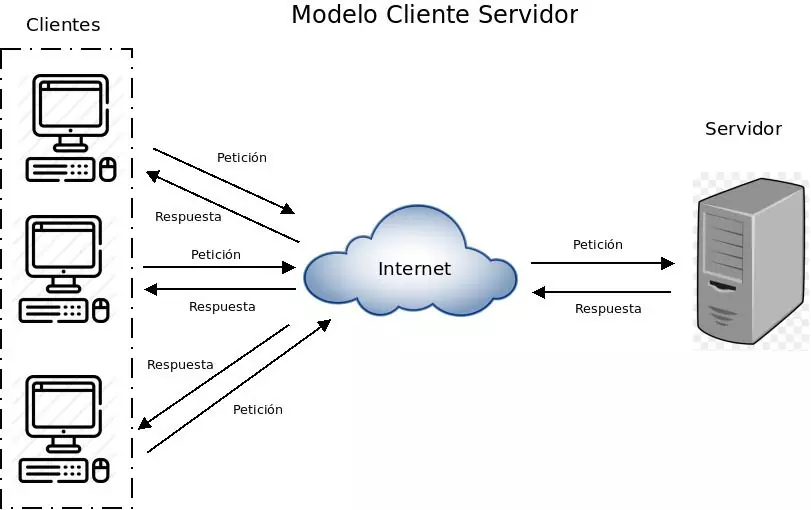

La arquitectura cliente-servidor es un modelo de diseño de software que divide las tareas entre los proveedores de recursos o servicios, llamados servidores, y los solicitantes de servicios, llamados clientes. En este modelo, el cliente envía solicitudes al servidor, que procesa la solicitud y devuelve una respuesta. Esta arquitectura es fundamental para el desarrollo de aplicaciones web y sistemas distribuidos.

Saber másEl desarrollo full stack se refiere a la capacidad de un desarrollador para trabajar en todas las capas de una aplicación, desde el frontend (interfaz de usuario) hasta el backend (servidor, base de datos). Un desarrollador full stack tiene conocimientos en una variedad de tecnologías y lenguajes de programación, lo que le permite crear aplicaciones completas y funcionales.
Saber más| Capa | Tecnologías | Rol |
|---|---|---|
| Frontend | HTML, CSS, JavaScript | Interfaz de usuario |
| Backend | Python, Node.js, Java | Lógica de negocio |
| Base de Datos | MySQL, PostgreSQL, MongoDB | Almacenamiento y gestión de datos |